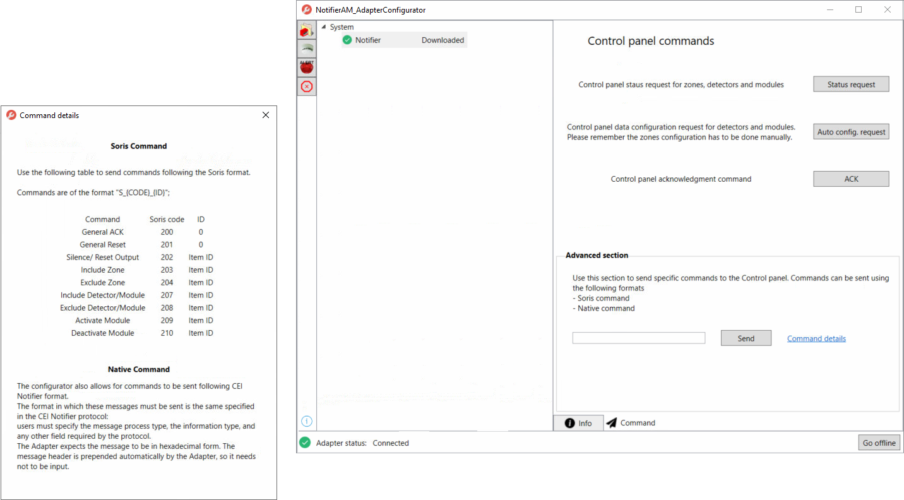

Testing the Communication
- You downloaded the configuration to override online configuration data, or you activated a configuration created with offline engineering or from scratch.
- The status of the control panels is
 (
(Connected). - Under System, select a control panel.
- Switch to the Command tab.
- The Control panel commands area is displayed.
- In the Advanced section area, do the following:
a. Click Command details to view the list of commands in SORIS format and any information relevant to this diagnostic task.
b. Enter the code that corresponds to the command you want to test using the following format:S_[SORIS code]_[last number of the Item key]. For example, to test the command Include Zone (SORIS code = 200) on zone with Item key = 1_10_1, enter the command codeS_200_1.
c. Click Send.

- The result of the command action is displayed next to panel or item under System. In this example,
Not excluded.